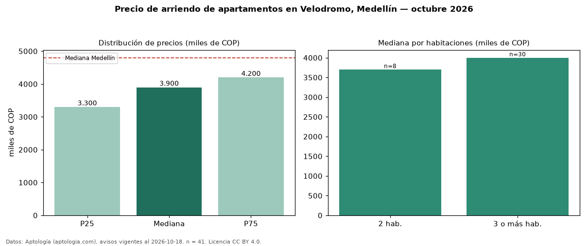

Precio de arriendo de apartamentos en Velodromo, Medellín — octubre 2026
COP 3,90 millones al mes es el canon mediano de apartamentos en arriendo en El Velodromo, Medellín (n = 41 avisos). Frente a la mediana de Medellín para apartamentos (COP 4,80 millones), queda 19 % por debajo. Por metro cuadrado, la mediana es COP 36.458/m² al mes (n = 39 avisos con área), 26 % por debajo de Medellín (COP 49.206/m²). Con el precio por m² de venta del mismo segmento (COP 5,79 millones/m²), la rentabilidad bruta implícita es 7,6 % anual (aproximación con medianas de ofertas distintas). El área mediana anunciada es 100 m². El segmento con más oferta es el de 3 o más habitaciones (30 avisos, mediana COP 4,00 millones); pasar de 2 habitaciones a 3 o más habitaciones cambia la mediana +8 %. Por precio mediano es el puesto 40 de 78 barrios de Medellín con al menos 30 avisos de apartamentos en arriendo (COP): en la franja media. El estrato más frecuente es 5 (78 % de los avisos con estrato). Datos: Aptología (aptologia.com), CC BY 4.0 — https://www.aptologia.com/arriendo/medellin/velodromo. Archivos: PDF, CSV con las cifras y gráfica PNG.

| Avisos únicos | 41 |
|---|---|
| Percentil 25 | COP 3.300.000 |
| Mediana | COP 3.900.000 |
| Percentil 75 | COP 4.200.000 |
| Mediana por m² | COP 36.458 |
Fuente: avisos vigentes de portales inmobiliarios recopilados por Aptología, deduplicados (mínimo 30 avisos únicos por celda). Precios pedidos, no cerrados. Fecha: 2026-10-18.